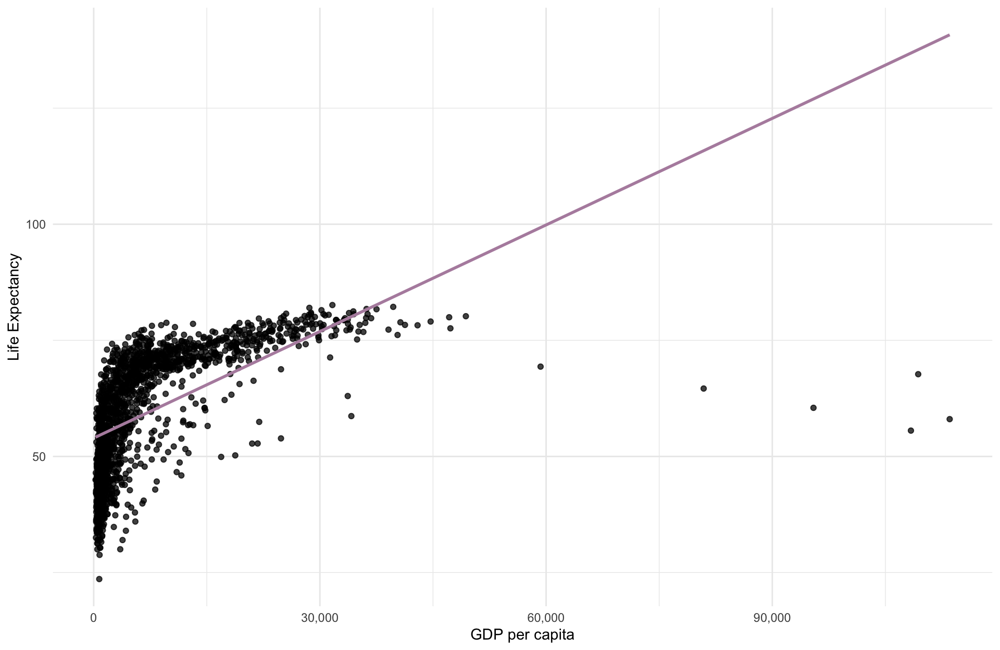
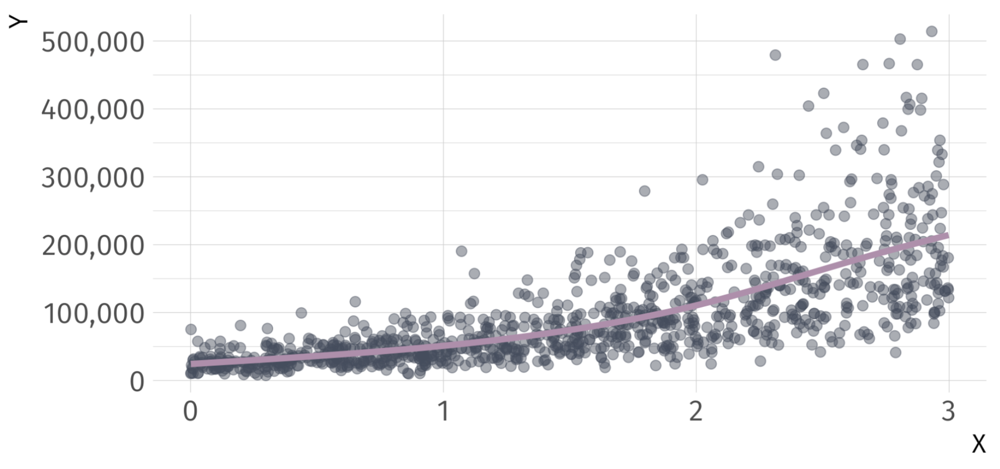
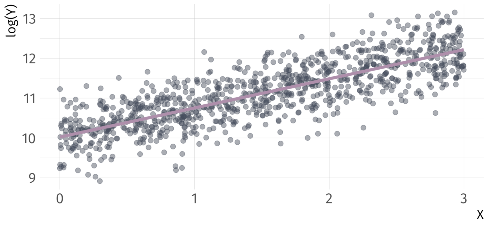
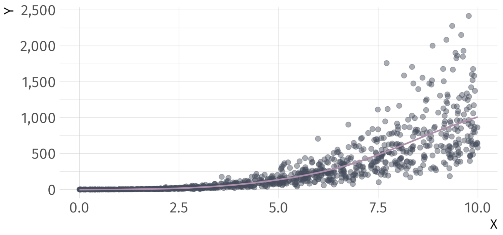
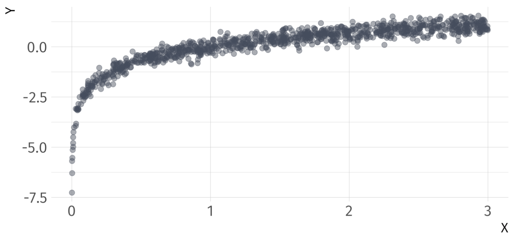
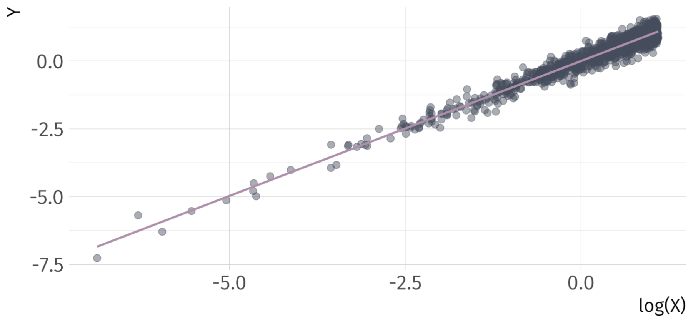
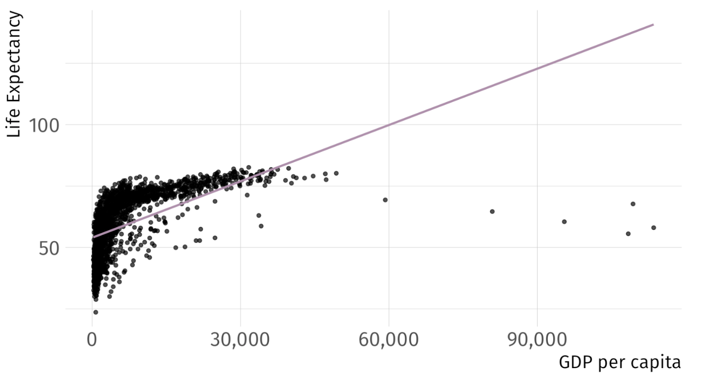
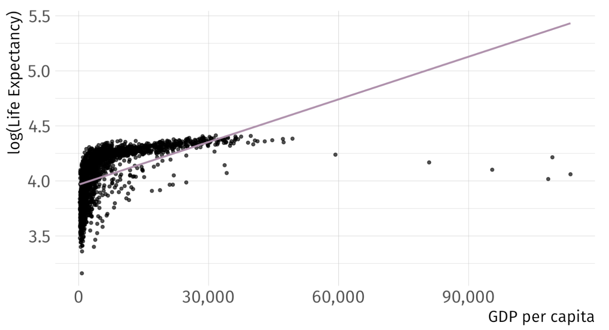
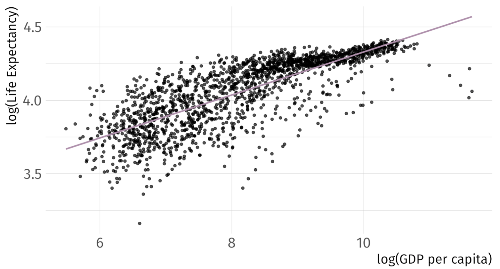
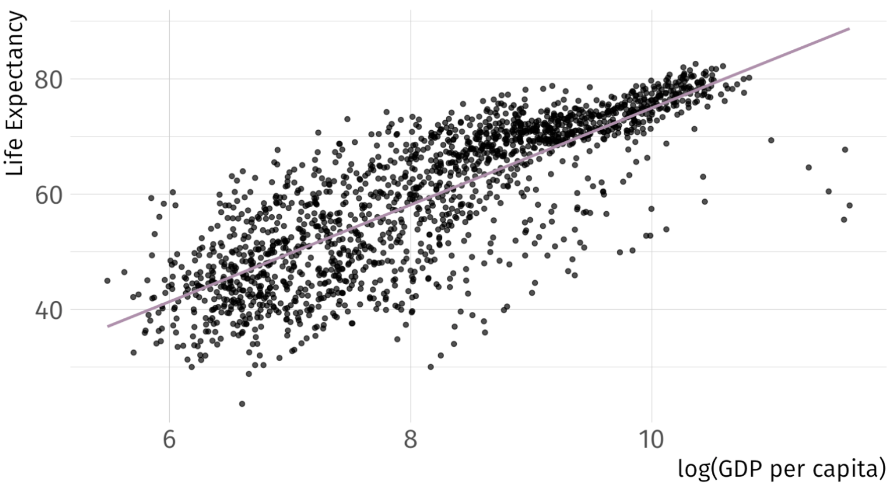

# A tibble: 2 × 5
term estimate std.error statistic p.value
<chr> <dbl> <dbl> <dbl> <dbl>
1 (Intercept) 54.0 0.315 171. 0
2 gdpPercap 0.000765 0.0000258 29.7 3.57e-156Non-Linear Models
EC 320 - Introduction to Econometrics
Jose Rojas-Fallas
2025
Prologue
Linear regression
Suppose we would like to estimate the degree to which an increase in GDP correlates with Life expectancy. We set up our model as follows:
\[ {\text{Life Expectancy}_i} = \beta_0 + \beta_1 \text{GDP}_i + u_i \]
Using the gapminder package in R, we could quickly generate estimates to get at the correlation But first, as always, let’s plot it before running the regression
Visualize the OLS fit? Is \(\beta_1\) positive or negeative?

Linear regression
Using the gapminder, we could quickly generate estimates for
\[ \widehat{\text{Life Expectancy}_i} = \hat{\beta_0} + \hat{\beta_1} \cdot \text{GDP}_i \]
Fitting OLS. But are you satisfied? Can we do better?
Linearity in OLS
Up to this point, we’ve acknowledged OLS as a “linear” estimator.
Many economic relationships are nonlinear.
- e.g., most production functions, profit, diminishing marginal utility, tax revenue as a function of the tax rate, etc.
The “linear” in simple linear regression refers to the linearity of the parameters or coefficients, not the predictors themselves.
Linearity in OLS
OLS is flexible and can accommodate a subset of nonlinear relationships.
- Underlying model must be linear-in-parameters.
- Nonlinear transformations of variables are okay.
- Modeling some nonlinear relationships requires advanced estimation techniques, such as maximum likelihood1
Put different, independent variables can be a linear combination of the parameters, regardless of any nonlinear transformations
Linearity
Linear-in-parameters: Parameters enter model as a weighted sum, where the weights are functions of the variables.
- One of the assumptions required for the unbiasedness of OLS.
Linear-in-variables: Variables enter the model as a weighted sum, where the weights are functions of the parameters.
- Not required for the unbiasedness of OLS.
The standard linear regression model satisfies both properties:
\[Y_i = \beta_0 + \beta_1X_{1i} + \beta_2X_{2i} + \dots + \beta_kX_{ki} + u_i\]
Linearity
Which of the following are an example of linear-in-parameters, linear-in-variables, or neither?
1. \(Y_i = \beta_0 + \beta_1X_{i} + \beta_2X_{i}^2 + \dots + \beta_kX_{i}^k + u_i\)
2. \(Y_i = \beta_0X_i^{\beta_1}v_i\)
3. \(Y_i = \beta_0 + \beta_1\beta_2X_{i} + u_i\)
Linearity
Which of the following are an example of linear-in-parameters, linear-in-variables, or neither?
1. \(\color{#A3BE8C}{Y_i = \beta_0 + \beta_1X_{i} + \beta_2X_{i}^2 + \dots + \beta_kX_{i}^k + u_i}\)
2. \(Y_i = \beta_0X_i^{\beta_1}v_i\)
3. \(Y_i = \beta_0 + \beta_1\beta_2X_{i} + u_i\)
Model 1 is linear-in-parameters, but not linear-in-variables.
Linearity
Which of the following are an example of linear-in-parameters, linear-in-variables, or neither?
1. \(\color{#A3BE8C}{Y_i = \beta_0 + \beta_1X_{i} + \beta_2X_{i}^2 + \dots + \beta_kX_{i}^k + u_i}\)
2. \(\color{#434C5E}{Y_i = \beta_0X_i^{\beta_1}v_i}\)
3. \(Y_i = \beta_0 + \beta_1\beta_2X_{i} + u_i\)
Model 1 is linear-in-parameters, but not linear-in-variables.
Model 2 is neither.
Linearity
Which of the following are an example of linear-in-parameters, linear-in-variables, or neither?
1. \(\color{#A3BE8C}{Y_i = \beta_0 + \beta_1X_{i} + \beta_2X_{i}^2 + \dots + \beta_kX_{i}^k + u_i}\)
2. \(\color{#434C5E}{Y_i = \beta_0X_i^{\beta_1}v_i}\)
3. \(\color{#B48EAD}{Y_i = \beta_0 + \beta_1\beta_2X_{i} + u_i}\)
Model 1 is linear-in-parameters, but not linear-in-variables.
Model 2 is neither.
Model 3 is linear-in-variables, but not linear-in-parameters.
Logarithms
We’re going to take logs
The natural log is the inverse function for the exponential function:
\[ \quad \log(e^x) = x \quad \text{for} \quad x>0 \]
(Natural) Log rules:
1. Product rule: \(\log(AB) = \log(A) + \log(B)\).
2. Quotient rule: \(\log(A/B) = \log(A) - \log(B)\).
3. Power rule: \(\log(A^B) = B \cdot \log(A)\).
4. Derivative: \(f(x) = \log(x)\) => \(f'(x) = \dfrac{1}{x}\).
Note: \(\log(e) = 1\), \(\log(1) = 0\), and \(\log(x)\) is undefined for \(x \leq 0\).
Log-Linear model
Nonlinear Model
\[ Y_i = \alpha e^{\beta_1 X_i}v_i \]
- \(Y > 0\), \(X\) is continuous, and \(v_i\) is a multiplicative error term.
- Cannot estimate parameters with OLS directly.
Logarithmic Transformation
\[ \log(Y_i) = \log(\alpha) + \beta_1 X_i + \log(v_i) \]
Redefine \(\log(\alpha) \equiv \beta_0\), \(\log(v_i) \equiv u_i\).
Transformed (Linear) Model
\[ \log(Y_i) = \beta_0 + \beta_1 X_i + u_i \]
Can estimate with OLS, but interpretation changes.
Log-Linear model
Regression Model
\[ \log(Y_i) = \beta_0 + \beta_1 X_i + u_i \]
Interpretation
- A one-unit increase in the explanatory variable increases the outcome variable by approximately \(\beta_1\times 100\) percent, on average.
- Ex.
-
If \(\log(\hat{\text{Pay}_i}) = 2.9 + 0.03 \cdot \text{School}_i\), then an additional year of schooling increases pay by approximately 3 percent, on average.
Log-Linear model
Derivation Consider the log-linear model
\[ \log(Y) = \beta_0 + \beta_1 \, X + u \]
and differentiate
\[ \dfrac{dY}{Y} = \beta_1 dX \]
Marginal change in \(X\) (\(dX\)) leads to a \(\beta_1 dX\) proportionate change in \(Y\).
- Multiply by 100 to get the percentage change in \(Y\).
Log-Linear Ex
\[ log(\hat{Y}_{i}) = 10.02 + 0.73 \cdot X_{i} \]
Log-Linear Ex
\[ log(\hat{Y}_{i}) = 10.02 + 0.73 \cdot X_{i} \]
Log-Linear
Note: If you have a log-linear model with a binary indicator variable, the interpretation of the coefficient on that variable changes. Consider
\[ \log(Y_i) = \beta_0 + \beta_1 X_i + u_i \]
for binary variable \(X\).
Interpretation of \(\beta_1\):
- When \(X\) changes from 0 to 1, \(Y\) will increase by \(100 \times \left( e^{\beta_1} -1 \right)\)%
- When \(X\) changes from 1 to 0, \(Y\) will decrease by \(100 \times \left( e^{-\beta_1} -1 \right)\)%
Log-Linear Ex
Take a binary explanatory variable: trained
trained = 1if employee \(i\) received trainingtrained = 0if employee \(i\) did not receive training
| Term | Estimate | Std. Error | Statistic | P-value |
|---|---|---|---|---|
| Intercept | 9.94 | 0.0446 | 223 | 0 |
| Trained | 0.557 | 0.0631 | 8.83 | 4.72e-18 |
Q. How do we interpret the coefficient on trained?
A1: Trained workers are 74.52 percent more productive than untrained workers.
A2: Untrained workers are 42.7 percent less productive than trained workers.
Log-Log model
Nonlinear Model
\[ Y_i = \alpha X_i^{\beta_1}v_i \]
- \(Y > 0\), \(X > 0\), and \(v_i\) is a multiplicative error term.
- Cannot estimate parameters with OLS directly.
Logarithmic Transformation
\[ \begin{align*} \log(Y_i) = \log(\alpha) +& \beta_1 \log(X_i) \\ +& \log(v_i) \end{align*} \]
- Redefine \(\log(\alpha) \equiv \beta_0\), \(\log(v_i) \equiv u_i\).
Transformed (Linear) Model
\[ \log(Y_i) = \beta_0 + \beta_1 \log(X_i) + u_i \]
Can estimate with OLS, but interpretation changes.
Log-Log regression model
\[ \log(Y_i) = \beta_0 + \beta_1 \log(X_i) + u_i \]
Interpretation
- A one-percent increase in the explanatory variable leads to a \(\beta_1\)-percent change in the outcome variable, on average.
- Often interpreted as an elasticity.
- Ex.
-
If \(\log(\widehat{\text{Quantity Demanded}}_i) = 0.45 - 0.31 \cdot \log(\text{Income}_i)\), then each one-percent increase in income decreases quantity demanded by 0.31 percent.
Log-Log derivation
Consider the log-log model
\[ \log(Y_i) = \beta_0 + \beta_1 \log(X_i) + u \]
and differentiate
\[ \dfrac{dY}{Y} = \beta_1 \dfrac{dX}{X} \]
A one-percent increase in \(X\) leads to a \(\beta_1\)-percent increase in \(Y\).
- Rearrange to show elasticity interpretation:
\[ \dfrac{dY}{dX} \dfrac{X}{Y} = \beta_1 \]
Log-Log Example
\[ log(\hat{Y}_{i}) = 0.01 + 2.99 \cdot log(X_{i}) \]
Log-Log Example
\[ log(\hat{Y}_{i}) = 0.01 + 2.99 \cdot log(X_{i}) \]

Linear-Log Model
Nonlinear Model
\[ e^{Y_i} = \alpha X_i^{\beta_1}v_i \]
- \(X > 0\) and \(v_i\) is a multiplicative error term.
- Cannot estimate parameters with OLS directly.
Logarithmic Transformation
\[ Y_i = \log(\alpha) + \beta_1 \log(X_i) + \log(v_i) \]
Redefine \(\log(\alpha) \equiv \beta_0\), \(\log(v_i) \equiv u_i\).
Transformed (Linear) Model
\[ Y_i = \beta_0 + \beta_1 \log(X_i) + u_i \]
Can estimate with OLS, but interpretation changes.
Linear-Log Model
Regression Model
\[ Y_i = \beta_0 + \beta_1 \log(X_i) + u_i \]
Interpretation
- A one-percent increase in the explanatory variable increases the outcome variable by approximately \(\beta_1 \div 100\), on average.
- Ex.
-
If \(\widehat{(\text{Blood Pressure})_i} = 150 - 9.1 \log(\text{Income}_i)\), then a one-percent increase in income decrease blood pressure by 0.091 points.
Linear-Log derivation
Consider the log-linear model
\[ Y = \beta_0 + \beta_1 \log(X) + u \]
and differentiate
\[ dY = \beta_1 \dfrac{dX}{X} \]
A one-percent increase in \(X\) leads to a \(\beta_1 \div 100\) change in \(Y\).
Linear-Log Ex
\[ \hat{Y}_{i} = 0 + 0.99 \cdot log(X_{i}) \]
Linear-Log Ex
\[ \hat{Y}_{i} = 0 + 0.99 \cdot log(X_{i}) \]
(Approximate) Coefficient Interpretation
For Model Type:
Linear-Linear \(\rightarrow Y_{i} = \beta_{0} + \beta_{1} X_{i} + u_{i}\)
- \(\beta_{1} \rightarrow \Delta Y = \beta_{1} \cdot \Delta X \rightarrow\) A one-unit increase in \(X\) leads to a \(\beta_{1}\)-unit increase in \(Y\)
Log-Linear \(\rightarrow log(Y_{i}) = \beta_{0} + \beta_{1} X_{i} + u_{i}\)
- \(\beta_{1} \rightarrow \% \Delta Y = 100 \cdot \beta_{1} \cdot \Delta X \rightarrow\) A one-unit increase in \(X\) leads to a \(\beta_{1} \cdot 100\)-percent increase in \(Y\)
Log-Log \(\rightarrow log(Y_{i}) = \beta_{0} + \beta_{1} log(X_{i}) + u_{i}\)
- \(\beta_{1} \rightarrow \% \Delta Y = \beta_{1} \cdot \% \Delta X \rightarrow\) A one-percent increase in \(X\) leads to a \(\beta_{1}\)-percent increase in \(Y\)
Linear-Log \(\rightarrow Y_{i} = \beta_{0} + \beta_{1} log(X_{i}) + u_{i}\)
- \(\beta_{1} \rightarrow \Delta Y = (\beta_{1} \div 100) \cdot \% \Delta X \rightarrow\) A one-percent increase in \(X\) leads to a \(\beta_{1} \div\)-unit increase in \(Y\)
So … Can we Do Better?
\[ (\widehat{\text{Life Expectancy})_i} = 53.96 + 8 \times 10^{-4} \cdot \text{GDP}_i \quad\quad R^2 = 0.34 \]
So ‚Ķ Can we Do Better?
\[ log(\widehat{\text{Life Expectancy})_i} = 3.97 + 1.3 \times 10^{-5} \cdot \text{GDP}_i \quad\quad R^2 = 0.3 \]
So ‚Ķ Can we Do Better?
\[ log(\widehat{\text{Life Expectancy})_i} = 2.86 + 0.15 \cdot log(\text{GDP}_i) \quad\quad R^2 = 0.61 \]
So ‚Ķ Can we Do Better?
\[ (\widehat{\text{Life Expectancy})_i} = -9.1 + 8.41 \cdot log(\text{GDP}_i) \quad\quad R^2 = 0.65 \]
Practical Considerations
Consideration 01 Does your data take negative numbers or zeros as values?
- \(log(0) = \infty\)
Consideration 02 What coefficient intepretation do you want?
- Unit change? Unit-free percentage change?
Consideration 03 Are your data skewed?

Quadratic Terms
Quadratic variables
Let’s talk about a wage regression again. Suppose we would like to estimate the effect of age on earnings. We estimate the following SLR:
\[ \text{Wage}_i = \beta_0 + \beta_1 \text{Age}_i + u_i \]
However, maybe we believe that \(\text{Wage}_i\) and \(\text{Age}_i\) have some nonlinear relationship—the effect of an additional year of experience, when age is 27 vs age is 67, might be different. So instead, we might estimate:
\[ \text{Wage}_i = \beta_0 + \beta_1 \text{Age}_i + \beta_2 \text{Age}^2_i + u_i \]
Quadratic variables
In this model:
\[ \text{Wage}_i = \beta_0 + \beta_1 \text{Age}_i + \beta_2 \text{Age}^2_i + u_i \]
the effect of \(\text{Age}_i\) on \(\text{Wage}_i\) would be:
\[ \frac{\partial \text{Wage}_i}{\partial \text{Age}_i} = \beta_1 + 2\beta_2 \text{Age}_i \]
Quadratic regression
Regression Model
\[ Y_i = \beta_0 + \beta_1 X_i + \beta_2 X_i^2 + u_i \]
Interpretation
Sign of \(\beta_2\) indicates whether the relationship is convex (+) or concave (-)
Sign of \(\beta_1\)? ü§∑
Partial derivative of \(Y\) wrt. \(X\) is the marginal effect of \(X\) on \(Y\):
\[ \color{#B48EAD}{\dfrac{\partial Y}{\partial X} = \beta_1 + 2 \beta_2 X} \]
- Effect of \(X\) depends on the level of \(X\)
Quadratic Regression
| Term | Estimate | Std. Error | Statistic | P-value |
|---|---|---|---|---|
| Intercept | 30,046 | 138 | 218 | 0 |
| X | 158.89 | 5.81 | 27.3 | 2.58e-123 |
| \(X^{2}\) | -1.50 | 0.0564 | -26.6 | 6.19e-118 |
What is the marginal effect of \(X\) on \(Y\)?
\[ \hat{\dfrac{\partial Y}{\partial X}} = \hat{\beta}_{1} + 2 \hat{\beta}_{2} X = 158.89 + 2(-1.50)X = 158.89 - 3X \]
Depends on level of \(X\)
Quadratic Regression
| Term | Estimate | Std. Error | Statistic | P-value |
|---|---|---|---|---|
| Intercept | 30,046 | 138 | 218 | 0 |
| X | 158.89 | 5.81 | 27.3 | 2.58e-123 |
| \(X^{2}\) | -1.50 | 0.0564 | -26.6 | 6.19e-118 |
What is the marginal effect of \(X\) on \(Y\), when \(X = 0\)?
\[ \widehat{\dfrac{\partial \text{Y}}{\partial \text{X}} }\Bigg|_{\small \text{X}=0} = \hat{\beta}_{1} = 158.89 \]
Quadratic Regression
| Term | Estimate | Std. Error | Statistic | P-value |
|---|---|---|---|---|
| Intercept | 30,046 | 138 | 218 | 0 |
| X | 158.89 | 5.81 | 27.3 | 2.58e-123 |
| \(X^{2}\) | -1.50 | 0.0564 | -26.6 | 6.19e-118 |
What is the marginal effect of \(X\) on \(Y\), when \(X = 2\)?
\[ \widehat{\dfrac{\partial \text{Y}}{\partial \text{X}} }\Bigg|_{\small \text{X}=2} = \hat{\beta}_{1} + 2 \hat{\beta}_{2} \cdot (2) = 158.89 - 5.99 = 152.9 \]
Quadratic Regression
| Term | Estimate | Std. Error | Statistic | P-value |
|---|---|---|---|---|
| Intercept | 30,046 | 138 | 218 | 0 |
| X | 158.89 | 5.81 | 27.3 | 2.58e-123 |
| \(X^{2}\) | -1.50 | 0.0564 | -26.6 | 6.19e-118 |
What is the marginal effect of \(X\) on \(Y\), when \(X = 7\)?
\[ \widehat{\dfrac{\partial \text{Y}}{\partial \text{X}} }\Bigg|_{\small \text{X}=7} = \hat{\beta}_{1} + 2 \hat{\beta}_{2} \cdot (7) = 158.89 - 20.98 = 137.91 \]
Fitted Regression Line

Marginal Effect of \(X\) on \(Y\)
Quadratic regression
Where does the regression \(\hat{Y_i} = \hat{\beta}_0 + \hat{\beta}_1 X_i + \hat{\beta}_2 X_i^2\) turn?
Step 1: Take the derivative and set equal to zero.
\[ \widehat{\dfrac{\partial \text{Y}}{\partial \text{X}} } = \hat{\beta}_1 + 2\hat{\beta}_2 X = 0 \]
Step 1: Solve for \(X\).
\[ X = -\dfrac{\hat{\beta}_1}{2\hat{\beta}_2} \]
Ex. Peak of previous regression occurs at \(X = 53.02\).
Extra: Anscombe’s Quartet
Anscombe’s Quartet AKA Plot Your Data
Four “identical” regressions: Intercept \(= 3\), Slope \(= 0.5\), \(R^{2} = 0.67\)
Same results, but with very different distributions only visible when you scatter them
EC320, Lecture 06 | Non-Linear Models